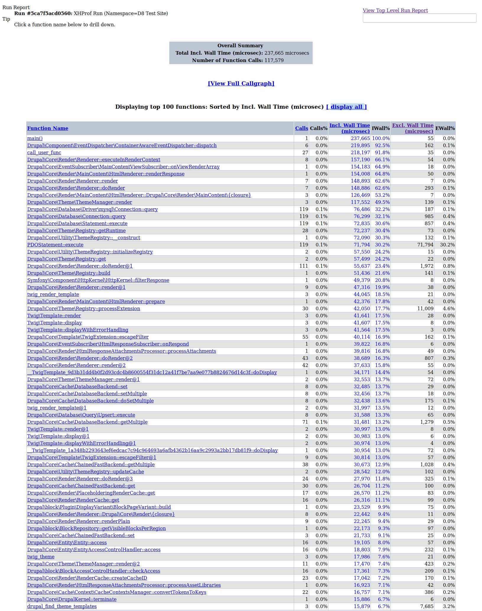
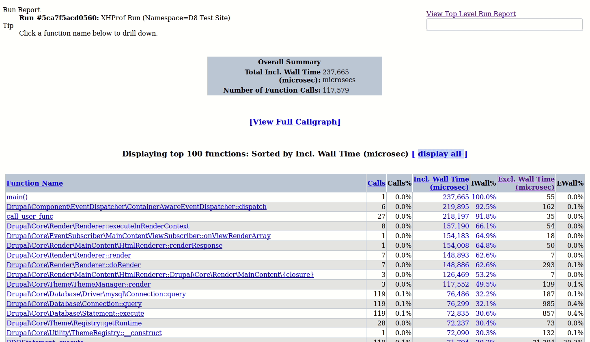
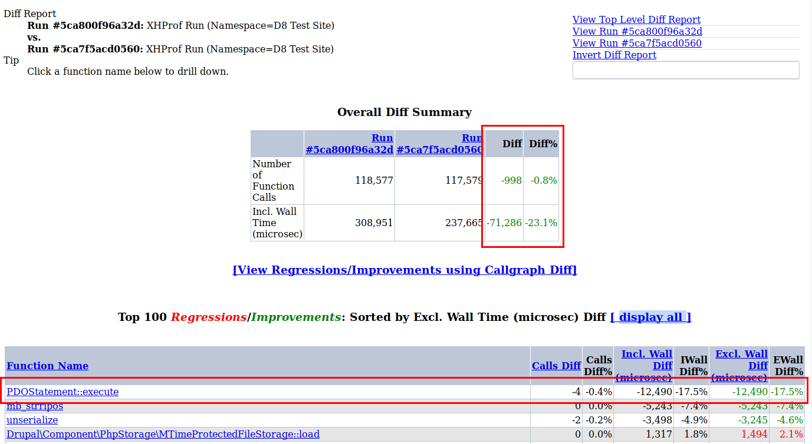
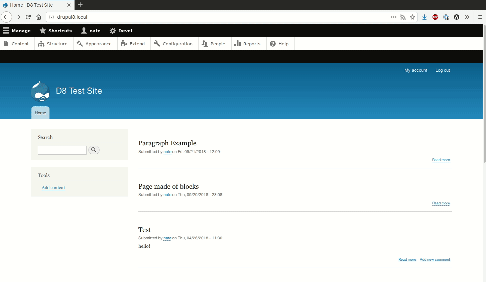
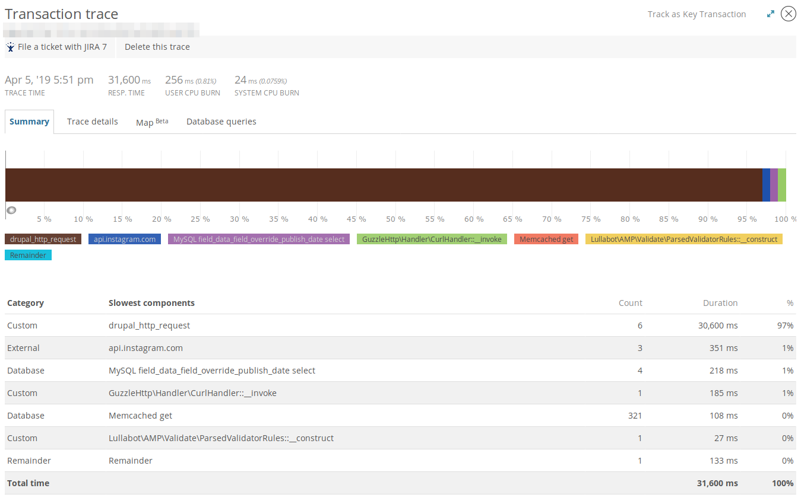
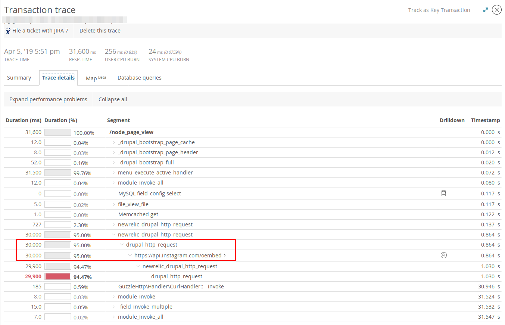
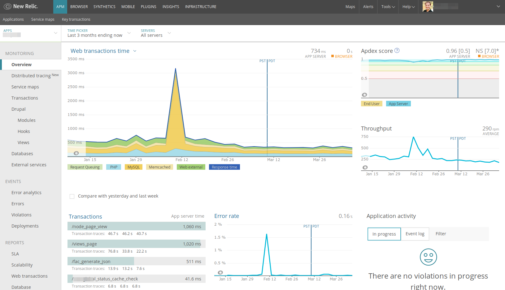
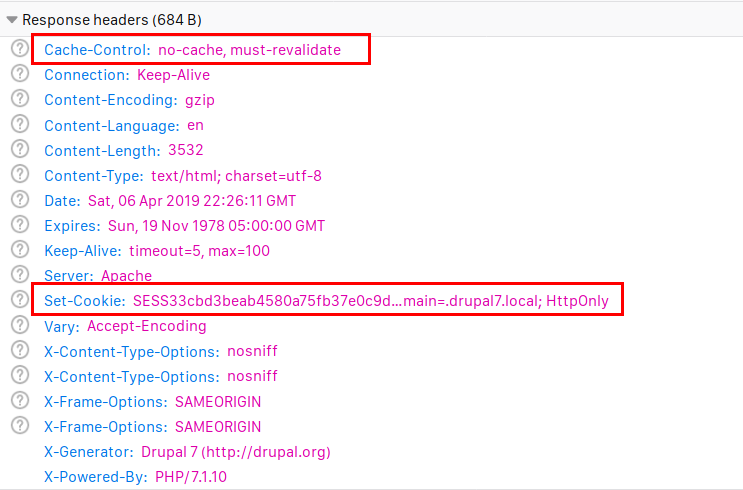
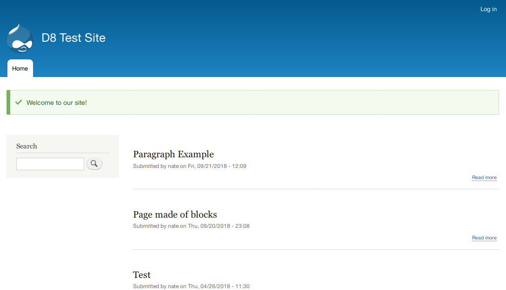
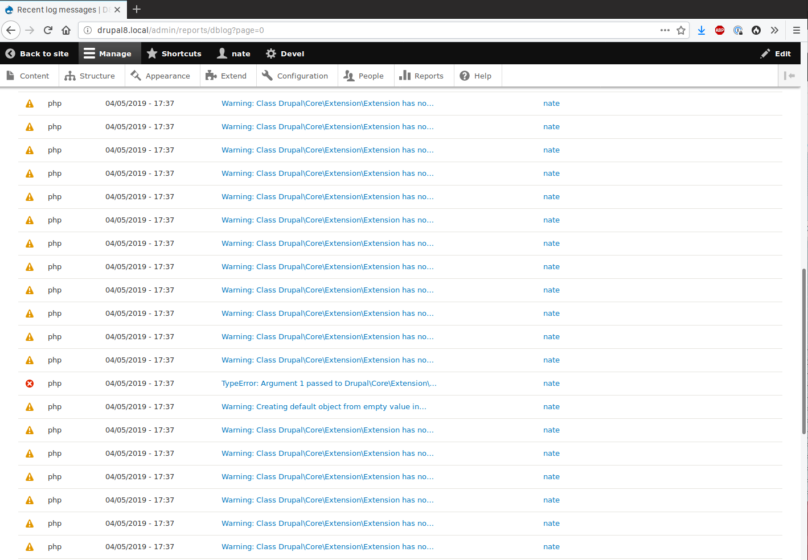

Performance Pitfalls
(Things You'll Probably Find While Profiling Your Drupal Site)
https://quicksketch.github.io/presentations/php-profiling/
by Nate Lampton
Hello
A Bit on Myself
- My Name is Nate Lampton
- I work at Lullabot
- I'm often "the Fixer"
- You can hire us for Performance Analysis
Hello
Clients include
- Harvard University
- NBC Entertainment
- Recording Academy (the GRAMMYs)
- Tesla Motors
Application Performance
What We're Covering
- The speed at which a non-cached HTTP response is returned (TTFB)
- Generation of HTML Pages
- Processing of Forms and AJAX Requests
Application Profiling
Essential to Determining Performance Problems
- Before your deploy every change
- Before you launch your site
- When you notice it's slow
- When someone else notices it's slow
And ideally, profile all the time
Tools
For Profiling
My Favorites
- XHProf
- Tideways
- BlackFire
- New Relic
XHProf

- Created by Facebook
- Only works prior to PHP 7
- Pioneered PHP Profiling
- Open Source
- Great for A/B Testing
http://xhprof.perfsummit.com
XHProf
XHProf
Great for Comparitive Diffing
- Normal query string:
?run=[hash1] - Example:
?run=5ca7f5acd0560 - Comparitive query string:
?run1=[hash1]&run2=[hash2]
http://xhprof.perfsummit.com
XHProf
Tideways
- Successor to XHProf
- Works Pretty Much Identical
- Same Data Format
- Open Source Extension
- Works with XHProf Module for Drupal 8
- Excellent for Local Debugging
- Online Service maintains Historical Tracking
- tideways.com
BlackFire.io
- Great On-Demand Profiler
- Service-only (results on website)
- Local and Production Debugging
- Continuous Integration Tie-ins
- Does not Profile every request
BlackFire.io
New Relic
- Always-on Profiler
- Typically only on Dev/Test/Live servers
- Not as Good for Local Profiling
- Most Expensive Option
- Excellent Tool for Tracking Historical Data
New Relic
New Relic
New Relic
Common Pitfalls
Affecting Most Drupal Sites
Using the $_SESSION Variable
$_SESSION['header_images'] = [
'assets/example/foo.png',
'assets/example/bar.png',
];
Using the $_SESSION Variable
Unexpected Culprits of $_SESSION
-
D7:
drupal_set_message()or
D8:\Drupal::messenger()->addMessage() - Any form, including search and polls
- Shopping Carts
Unexpected Culprits of $_SESSION
Solutions and Alternatives
- Only use $_SESSION for truly unique per-user data
- Switch to client-side cookies
- Use external services for comments, polling, mailing lists, etc
- AJAX load-in dynamic page parts
Web Services and External HTTP Requests
Blocking Server-Side Processes
- drupal_http_request() / Guzzle
- Mailing Lists
- Search Services
- OEmbed (Twitter/Facebook/Instagram/YouTube)
On-Demand Processing
Similar Problems with built-in Drupal processes
- CSS and JS aggregation
- Image Style Generation
Solutions and Alternatives
- Initiate requests client-side
- Avoid any "on-demand" actions if possible
- Add to a Queue and do actions later on cron
- Do processing on content save instead of on view
Modules that Can Help
- Advanced Agg (though tricky)
- Imageinfo Cache (D7)
- Image Style Warmer (D8)
Excessive Logging
Solutions
- Fix your code. ¯\_(ツ)_/¯
- Offloading logging (e.g. syslog) is a good idea but not a solution.
Debugging Modes Turned On
- Twig Debug
- Theme Registry Rebuild
- Devel Module Error Handler
Solutions
- Per-environment settings.php files
- Per-environment service files
- Disable Devel module using Config Split
Long-Running SQL Queries or Locking
- Easy to encounter in complex Views
- Unindexed or poor indexes
- Overuse of Similar by Terms Module
- D7: variable_set() a particularly bad culprit
Fixing SQL Problems
- Use EXPLAIN on the query and create indexes if needed
- Simplify the View configuration
- De-normalize tables (duplicate data in more than one table)
- Use Views or other caching to reduce frequency
Using EXPLAIN
mysql> EXPLAIN SELECT entity_id,
UNIX_TIMESTAMP(d.field_override_publish_date_value) as timestamp
FROM field_data_field_override_publish_date d
ORDER BY timestamp DESC LIMIT 10;
+----+-------------+-------+------------+------+---------------+------+---------+------+-------+----------+----------------+
| id | select_type | table | partitions | type | possible_keys | key | key_len | ref | rows | filtered | Extra |
+----+-------------+-------+------------+------+---------------+------+---------+------+-------+----------+----------------+
| 1 | SIMPLE | d | NULL | ALL | NULL | NULL | NULL | NULL | 10992 | 100.00 | Using filesort |
+----+-------------+-------+------------+------+---------------+------+---------+------+-------+----------+----------------+
1 row in set, 1 warning (0.00 sec)
- ❌ No "key"
- ❌ Thousands of rows
- ❌ "Using filesort" under "Extra"
- ❌ "Using temporary" (not in this example)
Using EXPLAIN
EXPLAIN SELECT nid, created FROM node n ORDER BY created DESC LIMIT 10;
+----+-------------+-------+------------+-------+---------------+--------------+---------+------+------+----------+-------------+
| id | select_type | table | partitions | type | possible_keys | key | key_len | ref | rows | filtered | Extra |
+----+-------------+-------+------------+-------+---------------+--------------+---------+------+------+----------+-------------+
| 1 | SIMPLE | n | NULL | index | NULL | node_created | 4 | NULL | 10 | 100.00 | Using index |
+----+-------------+-------+------------+-------+---------------+--------------+---------+------+------+----------+-------------+
1 row in set, 1 warning (0.02 sec)
Good Example switching to an index for sorting (same database)
- 👍 Index shown under "key"
- 👍 Only sorting on 10 rows
- 👍 "Using index" under "Extra"
Too Many Entities
- Not using node_/entity_load_multiple()
- Just too many pieces of content! (e.g. rss.xml or search result theming)
- Entity reference chaining
Too Many Entities
Individually loaded:
foreach ($node->field_entity_ref as $ref) {
$entity = $ref->entity;
...
}
Load all first:
foreach ($node->field_entity_ref->referencedEntities() as $entity) {
...
}
Outside the Application
Other Tools that Can Help
Refactoring
Difficult or Slow?
Varnish To the Rescue!
- Ultimate tool in covering up back-end problems
- Cache authenticated pages!
- Ignore Drupal's cache headers and session cookies!
- Tie your infrastructure directly to application behavior!
- (These are all bad ideas...)
- But can be a band-aid while refactoring.
Other Good Ideas
- Separate out memory usage from Apache
- Use PHP-FPM instead of mod_php
- Use Imagemagick instead of PHP's GD
- Always check that PHP's OpCache is enabled
Back-end Caching Tools
Redis or Memcache?
- Not as necessary as it had been.
- If networking is involved, gains are negligible or even negative.
- Can be beneficial in single-server setups.
- Reduces load on MySQL, if that's your bottleneck.